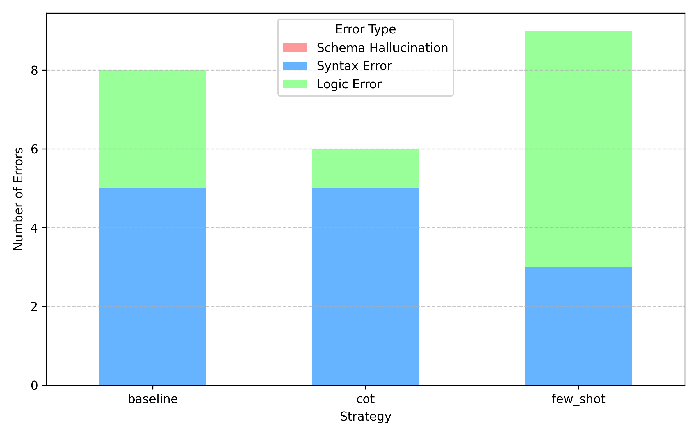

Foundational Text-to-SQL Pipeline: Modular Design and Inference Benchmarking
Transparent baseline for modular, validatable, and locally deployable Text-to-SQL
Eric Julianto · Dian Alhusari · Safrizal Ardana Ardiyansa · Vitri Tundjungsari · Tino Saputra
Braincore Indonesia · Universitas Esa Unggul · Universitas Brawijaya
Modular Design and Inference Benchmarking
Paper focus
- Transparent baseline for enterprise-oriented Text-to-SQL
- Modular pipeline with controllable validation points
- Benchmarking Zero-shot, Few-shot, and Chain-of-Thought on Spider
Why This Problem Matters
Text-to-SQL is attractive because it lets non-technical users query relational databases in natural language. In practice, production adoption is still constrained by three recurring failure modes:
- Schema hallucination
- Invalid SQL syntax
- Opaque reasoning that is hard to audit
For enterprise use, raw fluency is not enough. The system must be grounded in the schema, validatable before execution, and easy to improve component by component.
Research Goal and Contributions
Goal
Build a foundational Text-to-SQL pipeline that is simple, transparent, and suitable for controlled benchmarking.
Main contributions
- A modular pipeline separating intent handling, prompt construction, and validation
- A comparison of three prompting strategies using DeepSeek-R1-8B on Spider
- An error-oriented analysis showing where failures still concentrate
Pipeline Overview
Three-Stage Flow
- Intent analysis and schema selection
- Prompt construction and SQL generation
- Execution-oriented validation
Design Goal
- keep the system modular
- expose validation checkpoints
- make failure sources easier to diagnose
Stage Breakdown
Stage 1
Intent Analysis and Schema Selection
- Filter non-query inputs
- Rank relevant tables with TF-IDF
- Reduce prompt noise before generation
Stage 2
Prompt Factory
- Zero-shot baseline
- Static few-shot with generic examples
- Chain-of-Thought with explicit reasoning structure
Stage 3
Multi-level Validation
- Syntax checking
- Schema grounding
- Query execution against SQLite
Prompting Strategies Compared
| Zero-shot |
Direct schema + question to SQL |
Simple and efficient, but limited reasoning support |
| Few-shot (k=3) |
Add static Question-SQL examples |
Can help formatting, but may inject domain mismatch |
| CoT |
Ask model to reason before SQL generation |
Better planning, but higher token cost |
The benchmark asks a narrow practical question: which prompt format works best in a local, resource-constrained setup?
Experimental Setup
Model and Environment
- Model: DeepSeek-R1-8B
- Inference: Ollama
- Deployment: local 8-bit
- GPU: NVIDIA RTX 4060, 8GB VRAM
- RAM: 64GB DDR5
Evaluation Design
- Dataset: Spider
- Sample size: 150 queries
- Difficulty coverage:
- Simple: 52
- Intermediate: 64
- Complex: 34
- Metrics: Execution Accuracy, Validity, Average Tokens
Why Spider and Why Modular?
- Spider remains a strong cross-domain benchmark for cross-domain semantic parsing
- Multi-table queries expose join planning and grounding failures clearly
- A modular design helps isolate whether errors come from retrieval, prompt design, or validation
This is why the paper emphasizes diagnostic value over leaderboard chasing.
Main Results
| Baseline |
63.3 |
71.3 |
842 |
| Few-shot (k=3) |
58.0 |
67.3 |
1,437 |
| CoT |
70.7 |
78.7 |
1,185 |
Takeaway
- CoT is the strongest strategy in this benchmark slice
- Static few-shot underperforms, likely due to domain-mismatch noise
- Better structure can matter more than simply adding examples
Results by Query Complexity
| Simple |
52 |
82.7 |
75.0 |
86.5 |
| Intermediate |
64 |
59.4 |
54.7 |
67.2 |
| Complex |
34 |
41.2 |
35.3 |
52.9 |
The relative advantage of CoT becomes clearer as the SQL problem becomes more compositional.
Error Distribution

Key interpretation:
- Schema hallucination remains the dominant failure mode
- CoT reduces syntax errors by forcing explicit planning
- Reliability gains are real, but grounding is still the bottleneck
Qualitative Case Study
In the “Concert” database example, the baseline model hallucinated the column Highest when answering a question about average and maximum stadium capacity.
CoT handled the same case better because it first reasoned about:
- relevant table selection
- aggregation targets
- the valid Capacity column
This is consistent with the broader quantitative pattern: explicit reasoning mainly helps avoid structurally avoidable failures.
What This Benchmark Really Shows
The paper is not claiming a state-of-the-art Text-to-SQL system.
It shows that, under a practical local deployment setup:
- prompt design materially changes execution accuracy
- static few-shot examples can hurt when they are poorly aligned
- validation helps expose where the system still fails
That makes the pipeline useful as both an evaluation scaffold and an engineering baseline.
Limitations and Future Work
Current limits
- Only 150 sampled Spider queries
- Single quantized 8-bit model
- No dynamic retrieval or repair loop yet
Next steps
- Dynamic context retrieval
- self-correction / repair loops
- more agentic execution workflows
- broader benchmark coverage beyond the current slice
Conclusion
Bottom line
Chain-of-Thought provides the strongest overall performance in this foundational benchmark, especially on harder queries, but schema grounding remains the core unresolved challenge.
The practical contribution is a modular and auditable Text-to-SQL baseline that can be improved incrementally without turning the whole system into a black box.